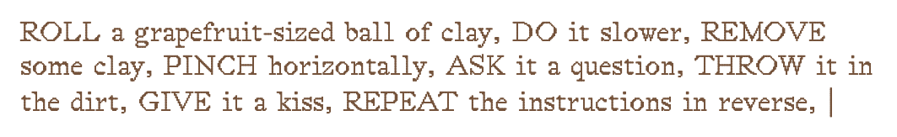
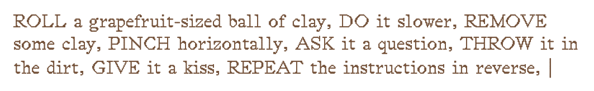
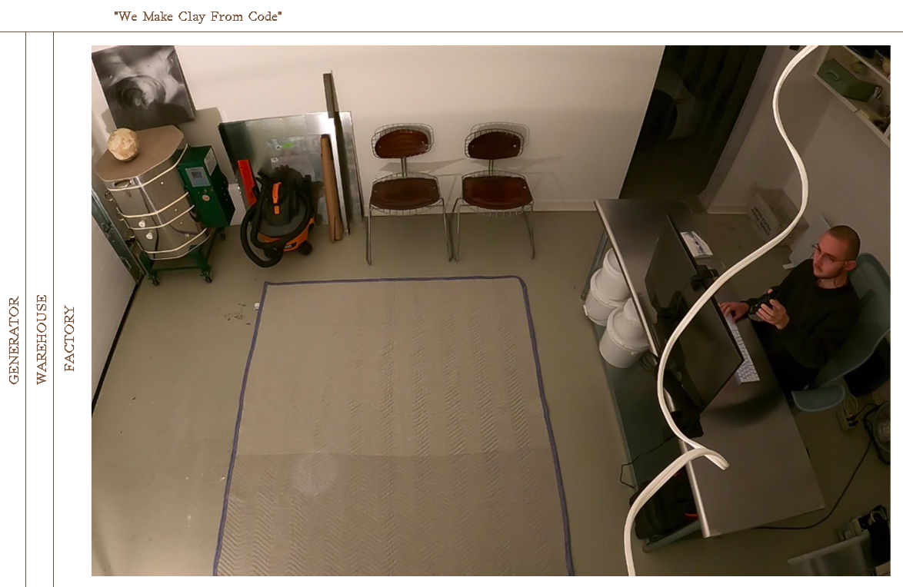

Clay Corporation®
Interview with Robert Morris Levine, Winter 2021 Participant
 

Describe the process of creating your site.
When you plant a seed, you don't know what it will become. It might emerge like the picture on the envelope but maybe it will sprout a monstrous other thing. It will probably sprout a monstrous other thing.
What did you learn through Fruitful School?
HTML, CSS, and JavaScript are materials, and that these materials have histories.
What's something you'd like visitors to know?
This is make-believe.
What's it like to run a corporation?
It is no big deal.
What type of site would you like to see more on the www?
Less SquareSpace, Shopify, Wix, Weebly, and Cargo. More websites handmade on the QWERTY loom.
üçì
Robert Morris Levine
https://rmorrisl.info
